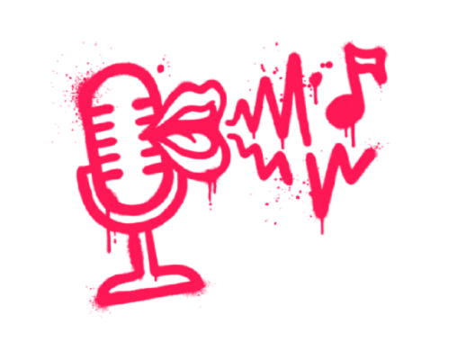
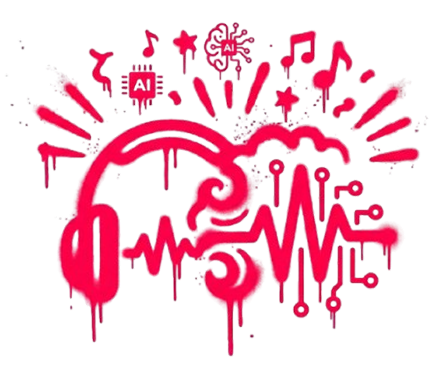
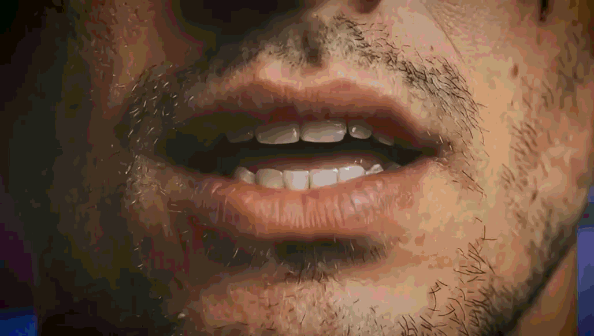
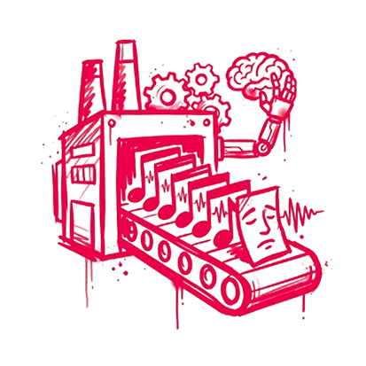

Las primeras generaciones de música sintética presentaban voces poco naturales y entonaciones extrañas. Estas limitaciones hacían que algunas canciones fueran más fáciles de identificar como artificiales.


Las primeras generaciones de música sintética presentaban voces poco naturales y entonaciones extrañas. Estas limitaciones hacían que algunas canciones fueran más fáciles de identificar como artificiales.

Los modelos actuales pueden generar canciones completas y reproducir con mayor complejidad voces, melodías, instrumentos, géneros y tempos. La diferencia entre una producción humana y una generada por IA ya no siempre resulta evidente al escucharla.

En 2026, el productor argentino Rastry presentó a Kode González, un artista de cumbia creado mediante inteligencia artificial. Su caso permite explorar estos avances dentro de un género musical reconocible para el público argentino.

Según contó Rastry a TN, trabajó durante aproximadamente dos años en el desarrollo de la voz de Kode para conseguir que transmitiera emoción y no sonara vacía o automática.
“Quiero que la gente sienta que le cantó de verdad”.
El desafío consiste en lograr una interpretación que genere una respuesta emocional.
Rastry x Kode Gonzalez

La mejora de las herramientas generativas y la producción masiva de contenido pueden dificultar la diferenciación. Manuel Cullen relaciona este problema con el dumping cognitivo: la naturalización de la IA puede contribuir a que se debilite nuestra capacidad de valorar sus particularidades.
¡Presioná el botón en tu teclado para continuar!